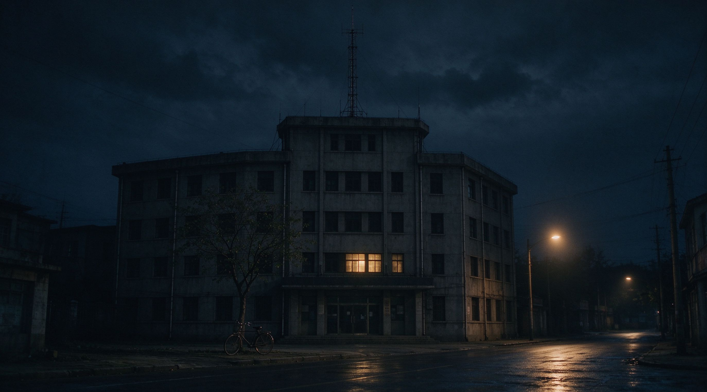

// 夜航船 · 午夜电台 · 1996-1998

这里是我整理电台内容的地方。大部分录音已经找不到了，剩下的只够拼出一部分。
我是陆沉，夜航船的声音工程师。苏晚是主持人。她习惯深夜直播，习惯在凌晨两点之后念听众来信。
1998 年 3 月 17 日晚上，她进了直播间，锁上了门。之后，她就再也没有出来。
如果你也听到了 FM 98.7 的信号，说明有人接上了这艘船。
我把我能找到的全部放在了这里。
请帮我找到她。
— 陆沉 · 1998 年 3 月 20 日